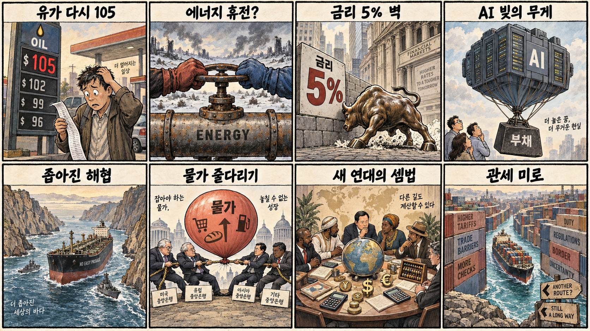
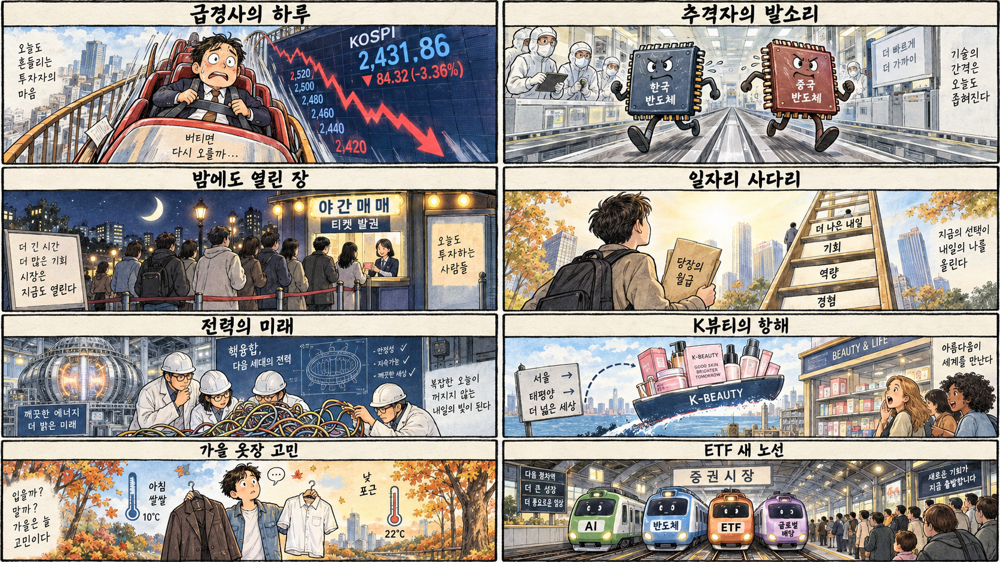

01
크라우드스트라이크 · 219.00→235.38달러 · +7.48%
내용요약 시가 대비 7%대 올라 조사 종목 가운데 가장 강한 흐름을 보였습니다.
예상여파 사이버보안 투자 기대를 보여주지만 단일 거래일 급등 뒤 변동성 확대에 유의해야 합니다.
MORNING_BRIEFING_20260915
작성 시각: 2026-09-15 06:38 KST · 직전 미국 정규장과 2026-09-15 KST 당일 공개 기사 기준
직전 미국 정규장인 9월 14일 뉴욕증시는 미 국채금리 상승과 AI 투자 경계가 겹치며 다우 -0.29%, S&P 500 -0.48%, 나스닥 -0.56%로 하락했습니다. 브렌트유 105달러 상회 보도까지 더해져 성장주 할인율과 기업 원가 부담이 동시에 부각됐습니다. 오늘 한국 증시는 전일 KOSPI 급락 뒤 기술적 반등 여지가 있지만 반도체 수급과 환율·유가를 확인하기 전 추격은 경계해야 합니다.
| 지수 | 종가 | 등락률 | 한국 증시 시사점 |
|---|---|---|---|
| 다우존스 | 52,421.20 | -0.29% | 금리·유가 부담, 종목별 차별화 |
| S&P 500 | 7,619.98 | -0.48% | 금리·유가 부담, 종목별 차별화 |
| 나스닥 종합 | 26,186.41 | -0.56% | 금리·유가 부담, 종목별 차별화 |
국채금리와 AI 투자 경계로 나스닥이 0.56% 내렸습니다.
반도체 대형주 약세 속 6,684.37로 밀렸습니다.
중동 공급 우려가 물가와 금리 부담을 다시 키웠습니다.
수급·컨센서스·보정 표본 문턱을 모두 통과한 후보가 없습니다.
9월 14일 보고서는 필수 수급·컨센서스·30건 이상 보정 표본 부족으로 공식 추천을 내지 않았습니다. 게시 당시 판단을 유지하며 사후 종목을 추가하지 않습니다.
| 시장 | 종가 | 등락률 | 기준 |
|---|---|---|---|
| KOSPI | 6,684.37 | -3.26% | 9월 14일 · 시가 대비 -0.12% |
| KOSDAQ | 806.79 | -1.69% | 9월 14일 · 시가 대비 +0.06% |
| 다우존스 | 52,421.20 | -0.29% | 미국 9월 14일 정규장 |
| S&P 500 | 7,619.98 | -0.48% | 미국 9월 14일 정규장 |
| 나스닥 종합 | 26,186.41 | -0.56% | 미국 9월 14일 정규장 |
크라우드스트라이크가 시가 대비 7%대 상승했습니다.
코인베이스와 마이크로스트래티지가 시가 대비 강세였습니다.
SK하이닉스 -7.12%, 삼성전자 -4.24%로 밀렸습니다.
고유가에도 엑슨모빌은 시가 대비 2%대 하락해 차별화됐습니다.
내용요약 시가 대비 7%대 올라 조사 종목 가운데 가장 강한 흐름을 보였습니다.
예상여파 사이버보안 투자 기대를 보여주지만 단일 거래일 급등 뒤 변동성 확대에 유의해야 합니다.
내용요약 시가 대비 5%대 상승해 지수 하락과 다른 상대강도를 보였습니다.
예상여파 가상자산 가격과 규제 뉴스에 민감해 국내 관련주의 단순 추격 근거로 삼기 어렵습니다.
내용요약 시가 대비 4%대 올라 가상자산 연계주의 강세가 확인됐습니다.
예상여파 기초자산 변동이 주가에 증폭될 수 있어 방향 전환 시 손실 위험도 큽니다.
내용요약 브렌트유 강세 보도에도 시가 대비 2%대 하락했습니다.
예상여파 유가 상승이 모든 에너지주에 같은 폭으로 반영되지 않으며 기업별 비용과 포지셔닝을 봐야 합니다.
내용요약 AI 관련 경계 속 시가 대비 1%대 하락했습니다.
예상여파 AI 서버 수요 기대와 고평가·투자비 우려가 맞서 국내 연결종목도 실제 수급 확인이 우선입니다.
KOSPI는 전일 6,684.37로 전일 종가 대비 -3.26% 하락했고, 시가 대비로도 -0.12% 밀렸습니다. 미국 3대 지수 약세, 미 10년물 금리 5% 돌파 보도, 브렌트유 105달러 상회는 할인율과 원가에 부담입니다. 반면 전일 급락에 따른 기술적 반등 가능성은 남아 있습니다. 개장 후 KOSPI 6,650선 방어, 외국인 반도체 수급, 원·달러 환율을 확인하기 전에는 갭 상승 추격을 피하는 편이 합리적입니다.
오늘은 추천 없음 — 현금 관망
06:30 KST 기준 당일 시가가 형성되지 않았고, 전일까지의 외국인·기관 수급, 최신 컨센서스 변화, 30건 이상 유사 조건 보정 확률, 예상 손익비 1.5를 동시에 검증한 후보가 없습니다. 전일 KOSPI 급락과 금리·유가 충격 국면에서 종합점수와 상승확률을 임의로 만들지 않습니다.
관심 연결종목 사이버보안·전력망·K뷰티·반도체 인프라는 관찰 대상일 뿐 매수 추천이 아닙니다. 장전 예상 갭이 크면 추격하지 않습니다.
전일 저점권 방어와 외국인 선물·현물 동반 수급을 봅니다.
5% 돌파 보도 뒤 추가 상승 여부와 성장주 반응을 확인합니다.
정유·운송·화학 업종의 엇갈린 원가와 마진 영향을 봅니다.
삼성전자·SK하이닉스의 거래량과 외국인 수급 회복을 점검합니다.
핵심 요약: AI 산업은 전력원 확보, 인프라 소프트웨어, 모바일 영상, 메모리 대안, 상장시장으로 동시에 확장되고 있습니다. 성장 기회와 함께 차입·전력·규제 부담을 함께 점검할 시점입니다.
내용요약 한국이 AI 시대의 전력 수요에 대응해 핵융합의 2030년대 전력 생산 가능성에 도전한다는 당일 보도입니다.
예상여파 상용화까지 긴 검증이 필요하지만 장기적으로 전력망·초전도·정밀제어 기술 투자를 촉진할 수 있습니다.
내용요약 워크플로 소프트웨어 기업 템포럴이 5억5천만달러 투자를 유치해 기업가치 125억5천만달러로 평가됐다는 당일 보도입니다.
예상여파 AI 서비스의 안정적 운영 수요가 커지며 개발도구와 클라우드 인프라 투자 경쟁이 이어질 수 있습니다.
내용요약 오픈AI가 스마트폰 카메라 기술 스타트업 글래스이미징을 3억달러에 인수했다는 당일 보도입니다.
예상여파 생성형 AI 경쟁이 텍스트를 넘어 모바일 촬영·영상 처리와 기기 내 경험으로 확대될 가능성이 큽니다.
내용요약 케플러가 기존 28나노 공정을 개조해 EUV 없이 HBM 대안 제품의 양산을 추진한다는 당일 보도입니다.
예상여파 저비용 메모리 대안이 현실화되면 AI 메모리 시장의 가격·기술 경쟁과 중국 추격 압력이 커질 수 있습니다.
내용요약 AI 안전 논쟁이 이어지는 가운데 앤트로픽이 예정대로 올해 상장을 추진할 수 있다는 당일 보도입니다.
예상여파 대형 AI 기업의 상장 가능성은 자금조달 기대를 높이지만 안전 규제와 막대한 투자비에 대한 검증도 강화할 수 있습니다.
핵심 요약: 러시아·우크라이나 에너지 시설 공격 중단 발표에도 중동 공급 우려로 브렌트유가 105달러를 웃돌았습니다. 고유가와 AI 기업 차입은 물가·금리·금융시장의 핵심 위험이며 브릭스 공조는 다극화 흐름을 보여줍니다.
내용요약 트럼프 미국 대통령이 러시아와 우크라이나가 에너지 시설에 대한 상호 공격을 중단하기로 했다고 발표했다는 당일 보도입니다.
예상여파 합의가 지켜지면 에너지 공급 위험이 낮아질 수 있으나 당사자 간 이견이 남아 유가 변동성은 지속될 수 있습니다.
내용요약 트럼프 대통령이 이란이 신속한 합의를 원한다고 언급하고 고유가 책임을 러시아·우크라이나 전쟁과 연결했다는 당일 보도입니다.
예상여파 중동 협상 진전 여부와 러시아산 에너지 흐름이 국제유가와 물가 기대를 함께 흔들 수 있습니다.
내용요약 중동발 공급 우려가 이어지며 브렌트유가 배럴당 105달러를 웃돌았다는 당일 시장 보도입니다.
예상여파 고유가는 운송·화학·소비재 원가와 각국 금리 경로에 부담을 주고 에너지 기업에는 상대적 우호 요인이 될 수 있습니다.
내용요약 브릭스 11개국이 함께 움직이는 배경과 경제·외교적 이해관계를 다룬 당일 국제 분석입니다.
예상여파 글로벌 남반구의 공조가 확대되면 원자재 결제와 무역 질서, 주요국 외교 협상의 다극화가 빨라질 수 있습니다.
내용요약 국제결제은행이 AI 기업 차입이 1조달러를 넘은 가운데 AI 주도 랠리의 금융 위험을 경고했다는 당일 보도입니다.
예상여파 차입 비용과 현금흐름 검증이 강화되면 고평가 AI 기업과 데이터센터 투자 계획의 변동성이 커질 수 있습니다.

핵심 요약: 애프터마켓 첫날 거래가 활발했지만 KOSPI 급락과 중국 반도체 추격은 자본시장·산업의 경계 신호입니다. 청년 일자리, K뷰티 유통 확장, 큰 일교차도 오늘 생활경제의 주요 변수입니다.
내용요약 KRX 애프터마켓 첫날 거래대금이 1조8천억원에 이르렀다는 당일 보도입니다.
예상여파 거래시간 확대는 접근성을 높이지만 정규장 밖 유동성·호가 공백과 가격 변동을 세밀하게 살펴야 합니다.
내용요약 중국 반도체의 점유율이 빠르게 높아져 국내 대형 메모리 기업도 안심하기 어렵다는 당일 보도입니다.
예상여파 HBM과 첨단 공정의 기술 격차 유지, 원가 경쟁력, 고객 다변화가 국내 반도체 밸류체인의 핵심 과제가 됩니다.
내용요약 43조원 규모 청년 예산을 두고 현금 지원보다 양질의 일자리 경로가 중요하다는 당일 칼럼입니다.
예상여파 직무훈련·산학협력·기업 채용이 연결되지 않으면 청년 체감 고용 개선이 제한될 수 있습니다.
내용요약 K뷰티 기업들이 아마존을 넘어 미국 오프라인 유통망으로 판매처를 넓힌다는 당일 보도입니다.
예상여파 유통 채널 다변화는 수출 성장에 보탬이 되지만 마케팅비와 재고, 현지 규제 대응 능력이 기업별 성과를 가를 수 있습니다.
내용요약 전국이 대체로 맑고 아침 최저 12도, 낮 최고 29도로 일교차가 크다는 당일 기상 보도입니다.
예상여파 출퇴근 시간 건강 관리와 농작물 온도 관리가 필요하며 동해안 국지 기상도 함께 살펴야 합니다.
